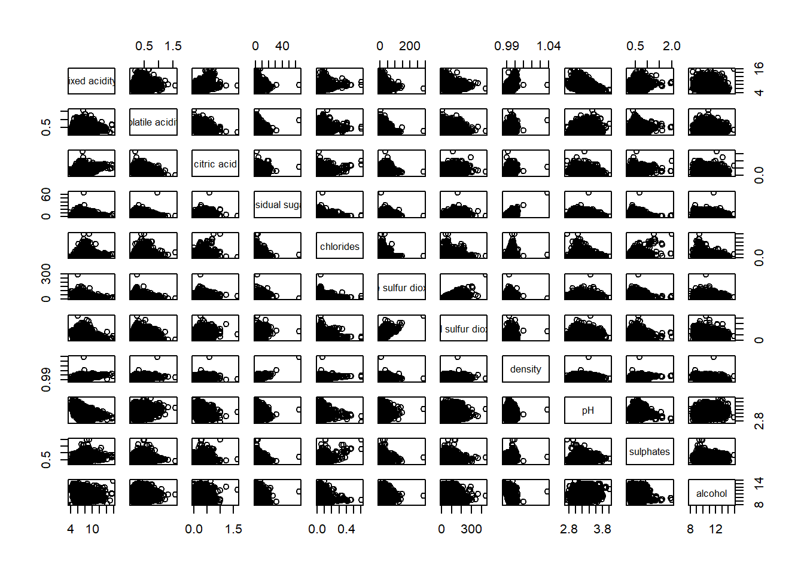
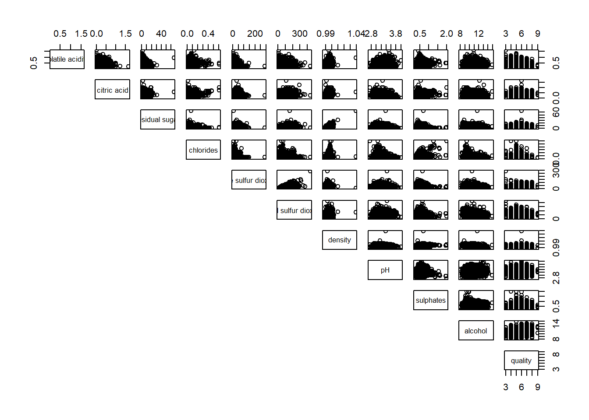
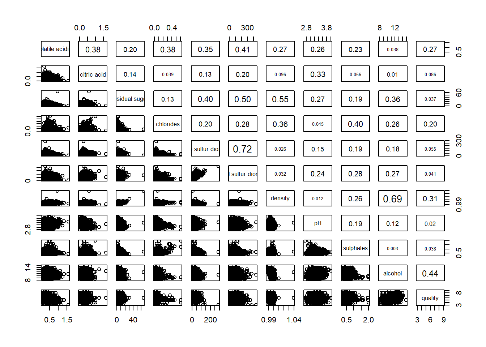
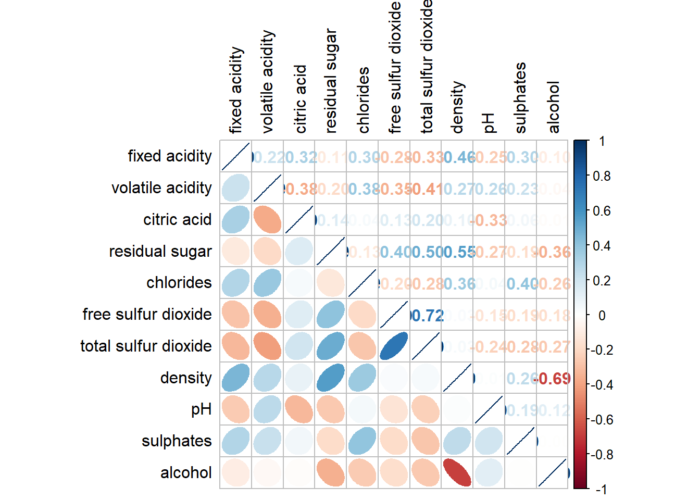
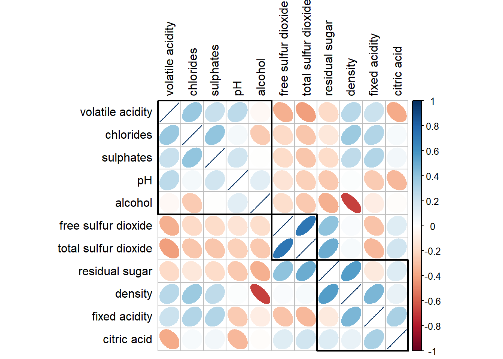

pacman::p_load(corrplot, ggstatsplot, tidyverse)Hands-on_Ex05b
Visual Correlation Analysis
1 Overview
The correlation coefficient measures the type and strength of the relationship between two variables, ranging from -1.0 (perfect inverse relationship) to 1.0 (perfect positive relationship), with 0 indicating no linear relationship. When working with multivariate data, correlation coefficients are displayed in a correlation matrix or scatterplot matrix.
Correlation matrices are useful for revealing relationships between variables, serving as inputs for analyses like factor analysis and regression, and diagnosing issues like multicollinearity in regression models. For large datasets, corrgrams are used to visually explore relationships by rendering correlation values and reordering variables for better interpretation.
This exercise covers three key methods for visualizing correlation matrices in R:
Using
pairs()from R Graphics to create a basic correlation matrix.Using the corrplot package to generate a corrgram.
Using plotly to create an interactive correlation matrix for deeper exploration.
2 Data Prep
In this hands-on exercise, the Wine Quality Data Set of UCI Machine Learning Repository will be used. The data set consists of 13 variables and 6497 observations. For the purpose of this exercise, we have combined the red wine and white wine data into one data file. It is called wine_quality and is in csv file format.
wine <- read_csv("data/wine_quality.csv",show_col_types = FALSE)3 Building Correlation Matrix: pairs() method
There are more than one way to build scatterplot matrix with R. In this section, you will learn how to create a scatterplot matrix by using the pairs function of R Graphics.
Before you continue to the next step, you should read the syntax description of pairsfunction.
3.1 Building a basic correlation matrix
Figure below shows the scatter plot matrix of Wine Quality Data. It is a 11 by 11 matrix.
pairs(wine[,1:11])
The required input of pairs() can be a matrix or data frame. The code chunk used to create the scatterplot matrix is relatively simple. It uses the default pairs function. Columns 2 to 12 of wine dataframe is used to build the scatterplot matrix. The variables are: fixed acidity, volatile acidity, citric acid, residual sugar, chlorides, free sulfur dioxide, total sulfur dioxide, density, pH, sulphates and alcohol.
pairs(wine[,2:12])
3.2 Drawing the lower corner
pairs(wine[,2:12], upper.panel = NULL)
The code chunk below displays the upper half of the correlation matrix.
pairs(wine[,2:12], lower.panel = NULL)
3.2 Drawing the lower corner
To show the correlation coefficient of each pair of variables instead of a scatter plot, panel.cor function will be used. This will also show higher correlations in a larger font.
panel.cor <- function(x, y, digits=2, prefix="", cex.cor, ...) {
usr <- par("usr")
on.exit(par(usr))
par(usr = c(0, 1, 0, 1))
r <- abs(cor(x, y, use="complete.obs"))
txt <- format(c(r, 0.123456789), digits=digits)[1]
txt <- paste(prefix, txt, sep="")
if(missing(cex.cor)) cex.cor <- 0.8/strwidth(txt)
text(0.5, 0.5, txt, cex = cex.cor * (1 + r) / 2)
}
pairs(wine[,2:12],
upper.panel = panel.cor)
4 Visualising Correlation Matrix: ggcormat()
A major limitation of the correlation matrix is that scatter plots become cluttered when dealing with large datasets (over 500 observations). To address this, the Corrgram visualization technique, proposed by D. J. Murdoch & E. D. Chow (1996) and M. Friendly (2002), provides a clearer representation of relationships between variables.
Several R packages can be used to create corrgrams, including corrgram, ellipse, and corrplot. Additionally, the ggstatsplot package offers functions for building corrgrams.
In this section, I will learn how to visualize a correlation matrix using ggcorrmat() from the ggstatsplot package, which provides an enhanced and structured approach to displaying correlation relationships.
4.1 The basic plot
On of the advantage of using ggcorrmat() over many other methods to visualise a correlation matrix is it’s ability to provide a comprehensive and yet professional statistical report as shown in the figure below.
ggstatsplot::ggcorrmat(
data = wine,
cor.vars = 1:11)
ggstatsplot::ggcorrmat(
data = wine,
cor.vars = 1:11,
ggcorrplot.args = list(outline.color = "black",
hc.order = TRUE,
tl.cex = 10),
title = "Correlogram for wine dataset",
subtitle = "Four pairs are no significant at p < 0.05"
)
Note
Things to learn from the code chunk above:
cor.varsargument is used to compute the correlation matrix needed to build the corrgram.ggcorrplot.argsargument provide additional (mostly aesthetic) arguments that will be passed toggcorrplot::ggcorrplotfunction. The list should avoid any of the following arguments since they are already internally being used:corr,method,p.mat,sig.level,ggtheme,colors,lab,pch,legend.title,digits.
The sample sub-code chunk can be used to control specific component of the plot such as the font size of the x-axis, y-axis, and the statistical report.
ggplot.component = list(
theme(text=element_text(size=5),
axis.text.x = element_text(size = 8),
axis.text.y = element_text(size = 8)))4.2 Building multiple plots
Since ggstasplot is an extension of ggplot2, it also supports faceting. However the feature is not available in ggcorrmat() but in the grouped_ggcorrmat() of ggstatsplot.
grouped_ggcorrmat(
data = wine,
cor.vars = 1:11,
grouping.var = type,
type = "robust",
p.adjust.method = "holm",
plotgrid.args = list(ncol = 2),
ggcorrplot.args = list(outline.color = "black",
hc.order = TRUE,
tl.cex = 10),
annotation.args = list(
tag_levels = "a",
title = "Correlogram for wine dataset",
subtitle = "The measures are: alcohol, sulphates, fixed acidity, citric acid, chlorides, residual sugar, density, free sulfur dioxide and volatile acidity",
caption = "Dataset: UCI Machine Learning Repository"
)
)
Note
Things to learn from the code chunk above:
to build a facet plot, the only argument needed is
grouping.var.Behind group_ggcorrmat(), patchwork package is used to create the multiplot.
plotgrid.argsargument provides a list of additional arguments passed to patchwork::wrap_plots, except for guides argument which is already separately specified earlier.Likewise,
annotation.argsargument is calling plot annotation arguments of patchwork package.
5 Visualising Correlation Matrix using corrplot Package
5.1 Getting started with corrplot
Before we can plot a corrgram using corrplot(), we need to compute the correlation matrix of wine data frame.
In the code chunk below, cor() of R Stats is used to compute the correlation matrix of wine data frame.
wine.cor <- cor(wine[, 1:11])Next, corrplot() is used to plot the corrgram by using all the default setting as shown in the code chunk below.
corrplot(wine.cor)
Note
The default visual representation for a corrgram is a circle, displayed in a symmetric matrix layout.
The blue-red diverging color scheme represents correlation coefficients, with blue for positive correlations and red for negative correlations.
The saturation (intensity) of the color indicates the strength of the correlation, with darker colors representing stronger relationships.
Darker colors indicate stronger linear correlations, while lighter colors suggest weaker relationships.
This visualization helps identify patterns and relationships between multiple variables efficiently.
5.2 Working with visual geometrics
corrplot(wine.cor,
method = "ellipse") 
Note
The corrplot package supports seven visual geometries: circle, square, ellipse, number, shade, color, and pie.
The default visual representation is a circle, but it can be changed using the
methodargument.The example uses
method = "ellipse", which displays correlations as ellipses.Different geometries help in better understanding correlation patterns based on user preference.
Users can experiment with various
methodoptions to customize the visualization.
5.3 Working with layout
corrplot(wine.cor,
method = "ellipse",
type="lower")
The default layout of the corrgram can be further customised. For example, arguments diag and tl.col are used to turn off the diagonal cells and to change the axis text label colour to black colour respectively as shown in the code chunk and figure below.
corrplot(wine.cor,
method = "ellipse",
type="lower",
diag = FALSE,
tl.col = "black")
5.4 Working with mixed layout
With corrplot package, it is possible to design corrgram with mixed visual matrix of one half and numerical matrix on the other half. In order to create a coorgram with mixed layout, the corrplot.mixed(), a wrapped function for mixed visualisation style will be used.
Figure below shows a mixed layout corrgram plotted using wine quality data.
corrplot.mixed(wine.cor,
lower = "ellipse",
upper = "number",
tl.pos = "lt",
diag = "l",
tl.col = "black")
corrplot.mixed(wine.cor,
lower = "ellipse",
upper = "number",
tl.pos = "lt",
diag = "l",
tl.col = "black")
Note
The
lowerandupperarguments define the visualization methods for the lower and upper halves of the corrgram.In this example, ellipses are used for the lower half, while numerical values represent correlations in the upper half.
The
tl.posargument controls the placement of axis labels.The
diagargument specifies the glyph type used on the principal diagonal.This mixed visualization provides both graphical and numerical insights into correlation relationships.
5.5 Combining corrgram with the significant test
In statistical analysis, it is important to determine which variable pairs have statistically significant correlations. The corrgram shown includes a significance test, revealing that not all correlations are statistically meaningful. For example, the correlation between total sulfur dioxide and free sulfur dioxide is significant at a 0.1 level, while the correlation between total sulfur dioxide and citric acid is not. The black “X” marks indicate non-significant correlations, helping to differentiate meaningful relationships from random associations.
wine.sig = cor.mtest(wine.cor, conf.level= .95)Then use the p.mat shown below
par(bg = "#f5f5f5")
corrplot(wine.cor,
method = "number",
type = "lower",
diag = FALSE,
tl.col = "black",
tl.srt = 45,
p.mat = wine.sig$p,
sig.level = .05,
tl.cex = 0.6,
bg="#f5f5f5")5.6 Reorder a corr-gram
Matrix reorder is very important for mining the hiden structure and pattern in a corrgram. By default, the order of attributes of a corrgram is sorted according to the correlation matrix (i.e. “original”). The default setting can be over-write by using the order argument of corrplot(). Currently, corrplot package support four sorting methods, they are:
“AOE” is for the angular order of the eigenvectors. See Michael Friendly (2002) for details.
“FPC” for the first principal component order.
“hclust” for hierarchical clustering order, and “hclust.method” for the agglomeration method to be used.
- “hclust.method” should be one of “ward”, “single”, “complete”, “average”, “mcquitty”, “median” or “centroid”.
“alphabet” for alphabetical order.
“AOE”, “FPC”, “hclust”, “alphabet”. More algorithms can be found in seriation package.
corrplot.mixed(wine.cor,
lower = "ellipse",
upper = "number",
tl.pos = "lt",
diag = "l",
order="AOE",
tl.col = "black")
5.7 Reordering a correlation matrix using hclust
corrplot(wine.cor,
method = "ellipse",
tl.pos = "lt",
tl.col = "black",
order="hclust",
hclust.method = "ward.D",
addrect = 3)
6 Reference
Michael Friendly (2002). “Corrgrams: Exploratory displays for correlation matrices”. The American Statistician, 56, 316–324.
D.J. Murdoch, E.D. Chow (1996). “A graphical display of large correlation matrices”. The American Statistician, 50, 178–180.
6.1 R packages
ggcormat()of ggstatsplot packagecorrplot. A graphical display of a correlation matrix or general matrix. It also contains some algorithms to do matrix reordering. In addition, corrplot is good at details, including choosing color, text labels, color labels, layout, etc.
corrgram calculates correlation of variables and displays the results graphically. Included panel functions can display points, shading, ellipses, and correlation values with confidence intervals.